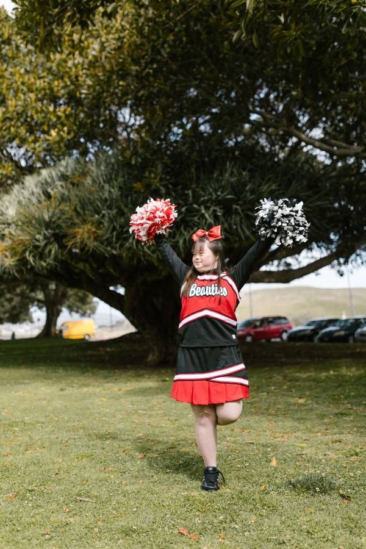
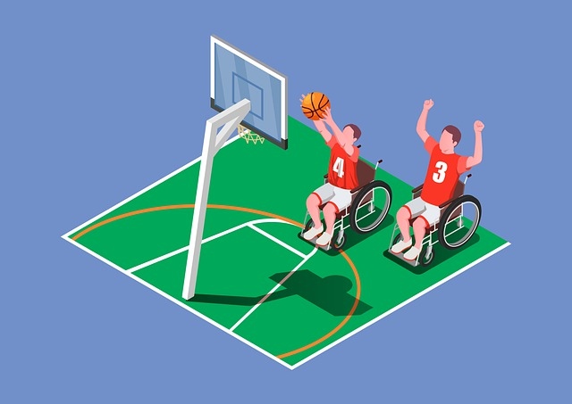

About The Games
The Special Olympics mission remains as vital today as it did when the movement was founded in 1968. Special Olympics strives to create a better world by fostering the acceptance and inclusion of all people. There are as many as 200 million people with intellectual disabilities around the world. Our goal is to reach out to every one of them—and their families as well.

Special Olympics reaches out through a wide range of trainings, competitions, health screenings and fund-raising events. We also create opportunities for families, community members, local leaders, businesses, law enforcement, celebrities, dignitaries and others to band together to change attitudes and support athletes. Team sports bring people together. Special Olympics Unified Sports® teams do that, too and much more. About 1.4 million people worldwide take part in Unified Sports, breaking down stereotypes about people with intellectual disabilities in a really fun way.
ESPN has served as the Global Presenting Sponsor of Special Olympics Unified Sports since 2013, supporting the growth and expansion of this program that empowers individuals with and without intellectual disabilities to engage through the power of sports. Special Olympics events are dedicated to promoting social inclusion through shared sports training and competition experiences. Unified Sports joins people with and without intellectual disabilities on the same team. It was inspired by a simple principle: training together and playing together is a quick path to friendship and understanding.
